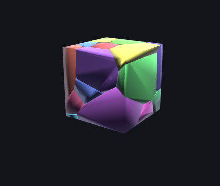
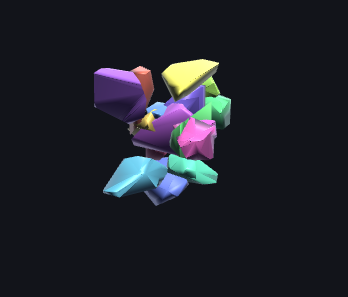
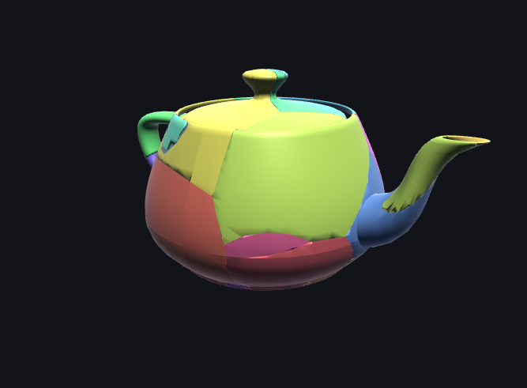
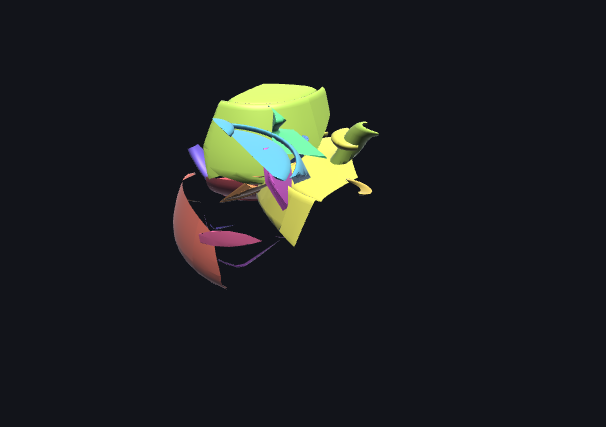

Final Project Milestone
Project Summary
We are building an interactive OpenGL destruction simulator that fractures closed triangle meshes into smaller fragments and simulates those fragments as rigid bodies. The current system supports OBJ mesh loading, Voronoi-style procedural fracture, a uniform-grid fracture baseline, real-time rigid-body motion, ground collisions, fragment interactions, timestep recording and scrubbing, and click-based impact events.
What We Have Accomplished
- Built the OpenGL application scaffold with CMake, GLFW, GLEW, GLM, shaders, camera controls, and dynamic mesh rendering.
- Implemented OBJ loading and normalization so external meshes can be loaded consistently.
- Implemented Voronoi-style fracture by generating seed points and clipping the source mesh against perpendicular bisector planes.
- Implemented watertight mesh clipping with cap reconstruction, edge-intersection deduplication, and normal recomputation.
- Added a uniform-grid fracture method for comparison against the Voronoi approach.
- Computed fragment mass properties using signed tetrahedral integration: volume, center of mass, and inertia tensor.
- Built a custom rigid-body simulation with gravity, semi-implicit integration, quaternion orientation updates, damping, ground collision, approximate body-body collision, impulses, friction, positional correction, and sleeping.
- Added interaction controls for camera movement, fragment count changes, refracturing, Voronoi/uniform switching, right-click impacts, explosion impulses, reset, pause/play, and timestep scrubbing.
Relevant implementation files include VoronoiFracture.cpp, UniformFracture.cpp,
MeshClipper.cpp, MeshProperties.cpp, PhysicsWorld.cpp,
Application.cpp, and TimestepRecorder.cpp.
Preliminary Results
Our preliminary results show that the system can load meshes, split them into independently rendered fragments, and simulate their motion under gravity. Voronoi fracture produces irregular polyhedral fragments, while the uniform-grid baseline produces more block-like pieces. The impact-biased mode creates denser fracture patterns near the clicked point, producing a more localized damage effect.




We also recorded a short demo video showing the current simulator behavior: https://www.youtube.com/watch?v=BT_0dcrKqs0.
Progress Relative to Plan
We are on track with the core baseline goals: mesh loading, OpenGL rendering, Voronoi fracture, an alternative fracture method, rigid-body simulation, interaction, and timestep scrubbing are all present in the current prototype.
One major design change is that we implemented a custom rigid-body solver instead of integrating Bullet Physics. This keeps the system self-contained and gives us more direct control, but our fragment-fragment collision is still approximate. The current narrow phase uses a simplified vertex-inside-AABB style test rather than a full convex collision method such as SAT or GJK.
The main remaining issues are visual overlap between debris pieces, jittery settling when fragments interact, several hotkeys that need debugging such as the fragment-count arrows, and general visual polish for the final demo.
Updated Work Plan
- Improve fragment collision robustness and resting behavior, especially for irregular meshes and higher fragment counts.
- Fix broken hotkeys, including increasing and decreasing the fragment count.
- Test more OBJ assets such as teapot, cow, bunny-like models, and Suzanne.
- Collect performance measurements for fracture time and simulation FPS as fragment count increases.
- Polish lighting, materials, colors, and overall presentation quality.
- Record final demo videos showing Voronoi fracture, uniform fracture comparison, impact-biased damage, and timestep scrubbing.
- Prepare the final webpage with screenshots, algorithm explanation, performance graphs, and video.
Updated Scope
We have achieved most of the baseline system: procedural fracture, rigid-body simulation, rendering, interaction, and comparison against a simpler fracture method. For the final deliverable, our priority is to make the demo stable and visually clear rather than adding many new features. Aspirational features such as progressive re-fracture, material-specific fracture behavior, dust, and debris particles will be added only after the main pipeline is robust.